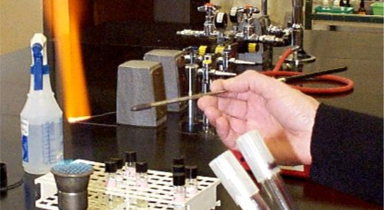
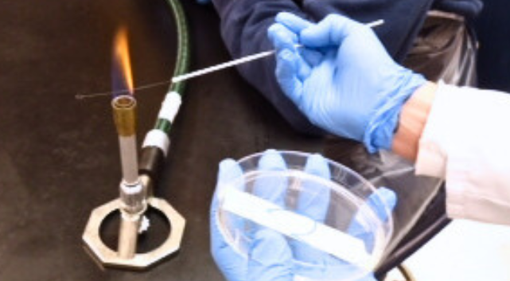

How to
LABORATORY MANUAL

I. Basic Laboratory Techniques
How To Transfer Culture
March 04, 2024
Microorganisms are transferred from one medium to another by subculturing. This technique is of basic importance and is used routinely in preparing and maintaining stock cultures, as well as in microbiological test procedures.

I. Basic Laboratory Techniques
How To Transfer Culture
March 04, 2024
In nature, microbial populations do not segregate themselves by species, but exist with a mixture of many other cell types. In the laboratory, these populations can be separated into pure cultures.